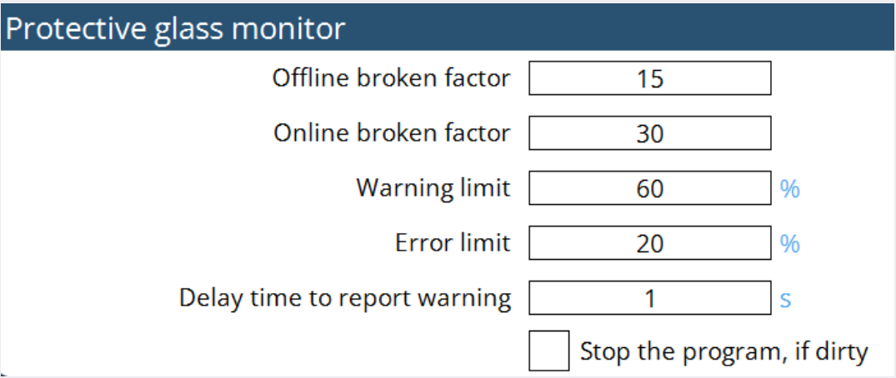
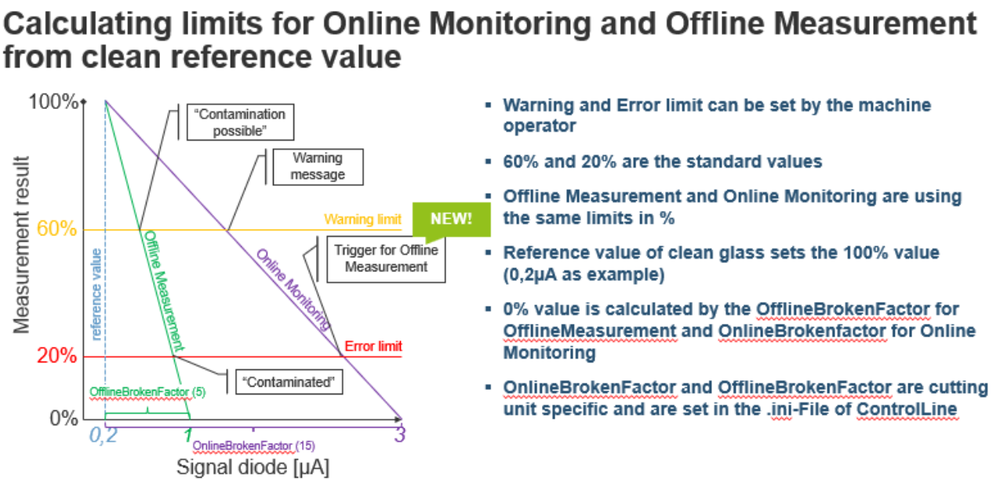

Control del cristal de protección
Parametrización
El control del cristal de protección es un sistema que monitorea el estado del cristal de protección. Podría evitar que produzca piezas de baja calidad o incluso daños en la máquina.El comportamiento se define de la siguiente manera :
-
Cuando el valor de calidad del cristal de protección es inferior al nivel de error durante el corte: la máquina detendrá el procesamiento, el rayo se apagará y aparecerá una ventana en la parte frontal de la HMI.
-
Si se hace clic en el botón Cerrar de la ventana, la máquina continuará cortando la chapa actual. Antes de procesar la siguiente chapa, realizará una medición del cristal de protección. Si la calidad sigue estando por debajo del nivel de error, la ventana aparecerá de nuevo. Hacer clic en "Cerrar" permitirá que la máquina continúe procesando y la ventana aparecerá de nuevo al final de la chapa.
-
Si el cristal está contaminado desde el principio, después de cortar el primer contorno, la máquina se detendrá y realizará una medición del cristal de protección. Si la calidad está por debajo del nivel de error, aparecerá una ventana emergente. Hacer clic en el botón Cerrar permitirá que la máquina continúe cortando la chapa actual.Hay una medición fuera de línea y una medición en línea posible :
| Medición fuera de línea | Monitoreo en línea | |
|---|---|---|
Tipo de medición |
Condiciones de medición fijas |
Medición in situ |
Activadores |
Límite relativo al valor de referencia limpio |
Límite relativo al valor de referencia limpio |
Efecto |
Resultado en porcentaje |
Reacción al final del contorno |
Finalidad |
Evita la producción de chatarra de material |
Activa la medición fuera de línea |
Medición fuera de línea: la medición fuera de línea se utiliza para verificar la calidad del cristal en condiciones estables. Durante la medición fuera de línea, se emiten tres niveles diferentes de potencia láser, cada uno durante un período de tiempo específico, generalmente 500 ms. La luz reflejada desde el cristal se mide en cada nivel de potencia, y la luminosidad de reflexión normalizada se calcula y se compara con un valor de referencia que se obtiene utilizando el mismo método. En este cálculo también se tiene en cuenta un factor de rotura fuera de línea para determinar la calidad del vidrio. Para el mismo valor de luminosidad de reflexión, un factor de rotura más alto indica una mejor calidad del cristal. Por lo tanto, solo cuando el cristal esté significativamente sucio, se emitirá una advertencia o se emitirá un error.
Monitoreo en línea : la medición en línea se utiliza para verificar la calidad del cristal durante el corte. Siempre que haya salida de láser, el valor medio de la luz reflejada durante un período de tiempo se calcula y se aplica un filtro de paso bajo a este valor. A continuación, se considera el factor de rotura en línea para determinar la calidad final del cristal. Debido a la naturaleza inestable de la salida del láser y la rerorreflexión de la chapa de corte, el factor de rotura en línea es significativamente más alto que el de fuera de línea.La parametrización se realiza en la página de configuración :

Medición de luminosidad
La medición de la ventana de protección se basa en una medición de luminosidad. Si la condición es Limpia, el estado de la ventana de protección es bueno para proceder con el corte en términos de buenos resultados de corte. Si la condición es Contaminada, el estado de la ventana de protección es deficiente y es aconsejable cambiar la ventana de protección para experimentar buenos resultados de corte.

Dependiendo del resultado del porcentaje de valor de calidad, limpie o reemplace el cristal de protección.
-
80%-90% → limpiar
-
< 80% → reemplazar

Con las entradas anteriores, los ejes X e Y se mueven hacia el valor posicionado.

La ejecución del programa seguirá los datos de frecuencia y servicio según los requisitos del usuario. El parámetro de potencia está predefinido en incrementos de 500 W, 1000 W y 1500 W.
El diámetro del foco, la distancia del foco y el tiempo de permanencia también se han modificado de acuerdo con los requisitos del usuario. Los valores introducidos se pueden monitorear cuando se ejecuta el programa. El tiempo de permanencia especificado mantendrá el programa hasta el tiempo de permanencia configurado y luego lo cancelará.
El modo de medición tiene datos fuera de línea y de referencia. En la selección fuera de línea, el usuario puede ejecutar el programa y comprobar el estado de la ventana de protección. En la selección de referencia, el usuario puede verificar de forma cruzada los datos y valores de calidad y linealidad y puede guardarlos usando la opción de guardado. Por lo general, se optará por la selección de referencia cuando la ventana de protección sea más nueva, lo que proporciona un conjunto de resultados más precisos.
Cuando se ejecuta el programa de medición de luminosidad, toma el registro de los datos y se puede leer en LumiMeasurelog.txt desde la ruta` C:\ProgramData\Metamation{APPNAME}\Log\Currentyear\Currentmonth\Currentday` o en la IU.


Con referencia al cálculo anterior, se añadirán los siguientes parámetros en el archivo MK para optimizar la función de monitoreo:
-
Factor de rotura offline
-
Factor de rotura online
-
Límite de advertencia en porcentaje
-
Límite de error en porcentaje
-
Retardo en segundos para comunicar advertencia